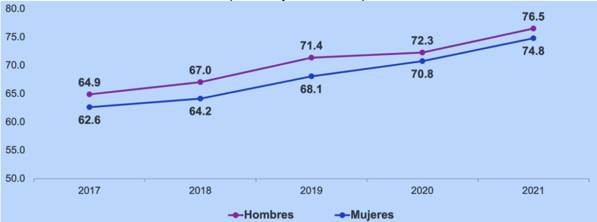
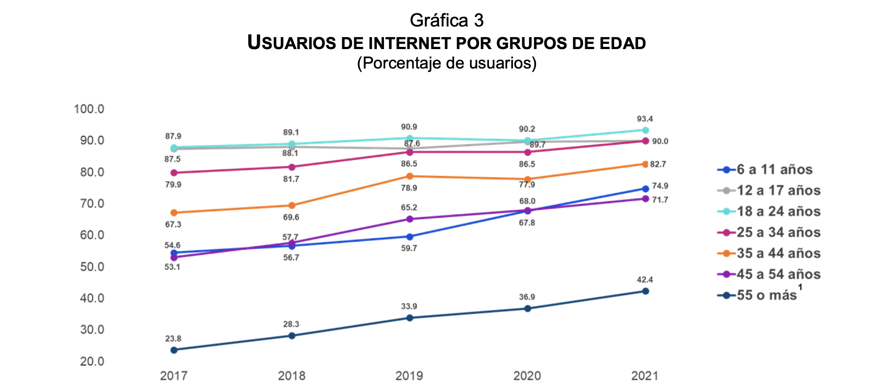
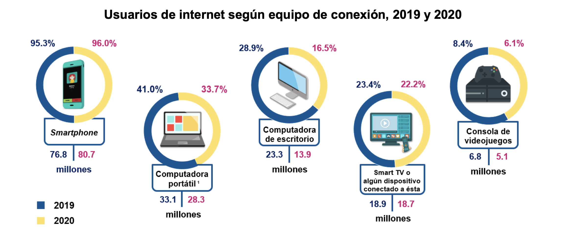
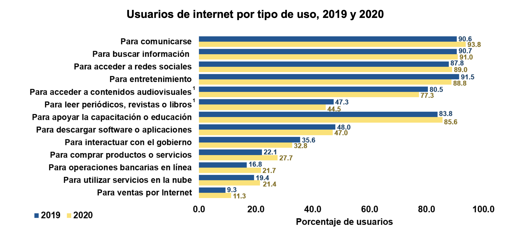

Uso del internet en México
Menú
Edad y sexo de los usuarios
Puntos de acceso a internet
Actividades principales de los usuarios
Edad y sexo de los usuarios
La Encuesta Nacional sobre Disponibilidad y Uso de Tecnologías de la Información en los Hogares (ENDUTIH) 2021, realizada por el Instituto Nacional de Estadística y Geografía (INEGI), en colaboración con el Instituto Federal de Telecomunicaciones (IFT), tiene como finalidad obtener información sobre la disponibilidad y el uso de las tecnologías de la información y comunicaciones en los hogares y su utilización por los individuos de seis años o más en México. Lo anterior brinda datos para apoyar la toma de decisiones en materia de políticas públicas. También ofrece elementos de análisis en estudios nacionales e internacionales para las y los usuarios interesados en la materia.
La ENDUTIH estimó que en 2021 había 88.6 millones de personas usuarias de internet, lo que representó 75.6 % de la población de seis años o más. Esta cifra reveló un aumento de 4.1 puntos porcentuales respecto a la de 2020 (71.5 %).
El 74.8 % del total de las mujeres de seis años o más y 76.5 % de los hombres del mismo rango de edad usan internet.
Gráfica 2
USUARIOS DE INTERNET POR SEXO
(Porcentaje de usuarios)

El menor uso de internet se registró en las personas de 55 y más años, con una participación de 42.4 por ciento. Entre 2017 y 2021, la tendencia se mantuvo al alza en todos los grupos de edad y destacó el de 6 a 11 años. Este aumentó su participación en 20.3 puntos porcentuales de 2017 a 2021.

Puntos de acceso a internet
El dispositivo más elegido para navegar en internet es el smartphone. El 96,8% de los usuarios utilizaron este dispositivo inteligente. El uso de televisores inteligentes aumentó de 12,4% en 2017 a un 25,7% en 2021. Asimismo, la consola de videojuegos pasó de 6,2% al 6,5%.
Por el contrario, quienes se conectaron a través de una computadora portátil o tableta y de una computadora de escritorio disminuyeron en 10,4 y 17,7 puntos porcentuales, respectivamente, entre 2017 y 2021. Al cierre del año pasado, un 15,4% de los usuarios usaba una computadora de escritorio y un 31,8%, una computadora portátil o tableta.

Actividades principales de los usuarios
Entre las principales actividades que realizan los usuarios de internet en 2020 están para comunicarse (93.8%), buscar información (91.0%) y acceder a redes sociales (89.0%). Cabe resaltar que la compra de productos o servicios presenta un crecimiento significativo de 5.6 puntos porcentuales en 2020 (27.7%) comparando con 2019 (22.1%). Por otro lado, las actividades que menos realizan los usuarios de internet, pero que presentan un cambio considerable en comparación a 2019 son: ventas en internet con un crecimiento de 2 puntos porcentuales (11.3% en 2020), utilizar servicios en la nube con un crecimiento de 2 puntos porcentuales (19.4% en 2019 y 21.4% en 2020) y operaciones bancarias en línea con un crecimiento de 4.9 puntos porcentuales (16.8% en 2019 y 21.7% en 2020).
